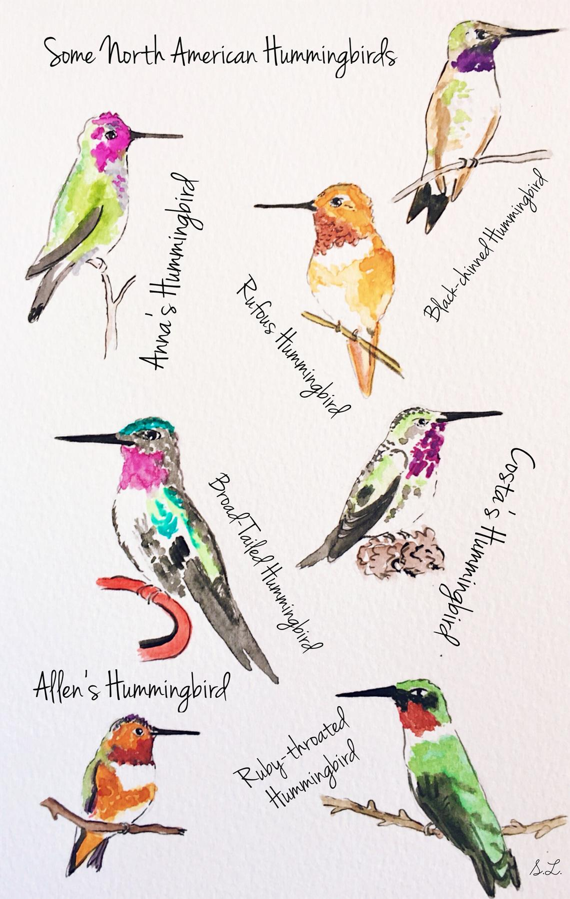

There are lots of different kinds of humming birds. The most common in San Diego are Anna's humming birds. That's what your going to see at these feeders. Check out the chart and see if you can spot other varieties. The females are harder to spot than the males. Their faces are just a bit less bright.
Humming birds are just so beautiful and energetic I could not resist. Seriously just take a look at these delightful little buzzing buggers for thirty seconds and see if you don't have a smile on your face. I build the cafeteria because I wanted a show while I cooked dinner, and I thought, hey in for a penny in for a pound, let's buy six humming bird feeders ten ports round. Humming birds are amazing pollinators and their population is directly tied to the success of many plant species. Typically humming birds only raise a single chick, however when food is plenty they are known to raise two or three. There are hundreds of humming birds in the valleys that run just north of Mesa Neueva, and down by the I-5. Their food gets short when it gets hot, and these years are hotter than ever. TLDR I like looking at hummingbirds and want to support the local population.
It's not a religious effigy, or at least it's not intended to be one. I needed cheap building supplies so I hunted down some invasivly growing bamboo down on the secret path to Sorento Valley. I was inspired by an amazing video of Liziqi building furniture out of bamboo. My skill is far less, but the home made aesthetic remains the same. The design was a matter of debate, if you think you have a better one hit me up.
Yes I live in this apartment that's the way it goes. Feel free to watch and take pictures of the birds, I'm glad for people to do it. Heck if you have any questions holler in and I'll probably come out and say hi. My name is Stew btw feel free to drop me a line at the link below.
{kind=link}